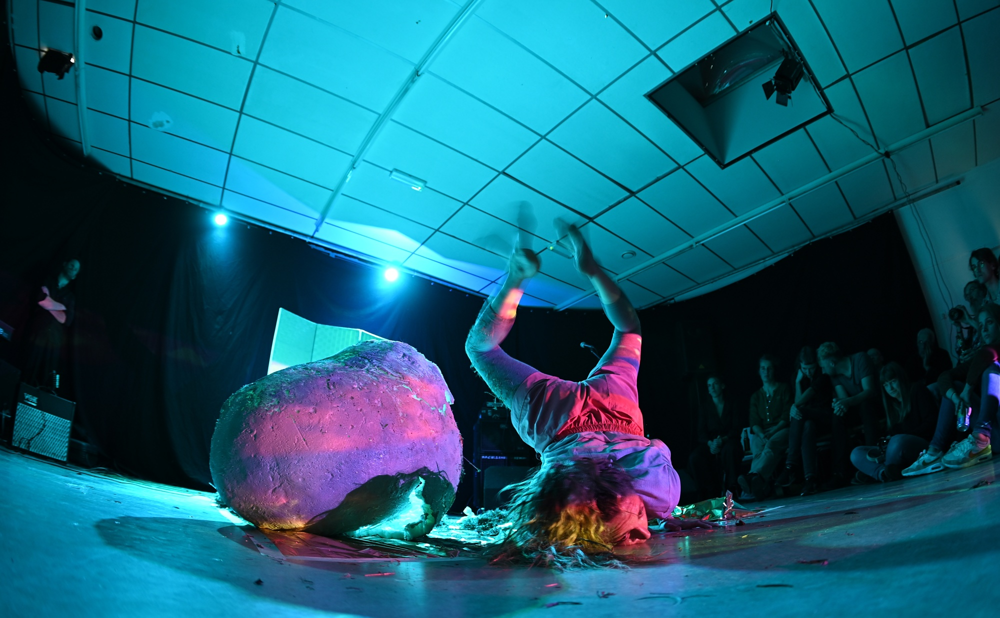

#16 De Reïncarnatie
#16 De Reïncarnatie

Lamarziendan startte in 2017 als een eenmalig initiatief, maar verspreidde zich in korte tijd als een virus door de stad. Totdat een ander virus het reizende circus de das om deed. Drie jaar lang doolde onze geest rond door de in duisternis en leegte gehulde stad... Maar er is nu weer licht aan de horizon! Als een feniks uit zijn eigen as herrezen ziet Lamarziendan opnieuw het levenslicht. Op 26 oktober, en wel in het Noorderkunstlicht, een voormalige basisschool die is omgetoverd tot creatieve broedplaats. De geest van Lamarziendan keert terug, maar reïncarneert telkens in een andere vorm. Het is zover, de weder vleeswording is aanstaande! Zet uw zitvlees neder in de arena van de podiumkunsten, laat u bedwelmen door de nieuwe werken van allerhande kunstenmakers en roep brullend en in koor als nooit tevoren: LAMARZIENDAN!